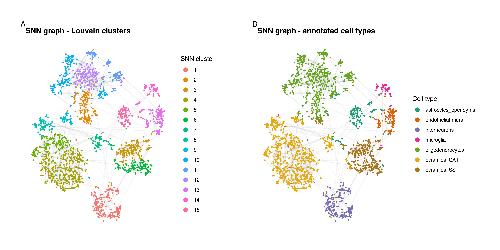

library(here)
library(GraphExperiment)
library(scRNAseq)
library(scrapper)
library(bluster)
library(tidyverse)
library(ggraph)
library(patchwork)
set.seed(123) # for reproducibility4 Use case 4: cell-cell graphs for clustering single-cell data
Graph-based clustering is the standard approach to identify cell populations in single-cell RNA-seq (scRNA-seq) data. In this approach, a graph of cells is built from a low-dimensional representation of the data (e.g., top principal components), with each cell connected to its nearest neighbors, and then communities are detected in the graph (Amezquita et al. 2019). Although cell-cell graphs are central to scRNA-seq data analysis, they are typically discarded after clustering, and there is no dedicated container for them in the SingleCellExperiment class. Here, we will use GraphExperiment to store cell-cell graphs in the colGraphs slot along with the expression data and dimensionality reduction results. We will use the mouse brain data set from Zeisel et al. (2015), which includes ~3,000 cells from the mouse cortex and hippocampus, available in the scRNAseq package (Risso and Cole 2025).
4.1 Data description and processing
We will first load the data and perform standard processing steps, including quality control, normalization, selection of highly variable genes (HVGs), and principal component analysis (PCA), using scrapper (Lun and Kancherla 2023), which provides fast implementations of common single-cell analysis steps.
# Load data
sce <- ZeiselBrainData()
sceclass: SingleCellExperiment
dim: 20006 3005
metadata(0):
assays(1): counts
rownames(20006): Tspan12 Tshz1 ... mt-Rnr1 mt-Nd4l
rowData names(1): featureType
colnames(3005): 1772071015_C02 1772071017_G12 ... 1772066098_A12
1772058148_F03
colData names(9): tissue group # ... level1class level2class
reducedDimNames(0):
mainExpName: gene
altExpNames(2): repeat ERCC# Cell types (as annotated by the authors)
table(sce$level1class)
astrocytes_ependymal endothelial-mural interneurons
224 235 290
microglia oligodendrocytes pyramidal CA1
98 820 939
pyramidal SS
399 # Quality control: remove low-quality cells based on library sizes,
# number of detected genes, and proportion of mitochondrial reads
is_mito <- rowData(sce)$featureType == "mito"
sce <- quickRnaQc.se(sce, subsets = list(mito = is_mito), filter.cells = TRUE)
# Normalization (library size factors) and log-transformation
sce <- normalizeRnaCounts.se(sce, size.factors = sce$sum)
# Feature selection and PCA
sce <- chooseRnaHvgs.se(sce, top = 2000)
sce <- runPca.se(sce, features = rowData(sce)$hvg, number = 25)
# Run t-SNE for visualization
sce <- runTsne.se(sce)
sceclass: SingleCellExperiment
dim: 20006 2874
metadata(2): qc PCA
assays(2): counts logcounts
rownames(20006): Tspan12 Tshz1 ... mt-Rnr1 mt-Nd4l
rowData names(6): featureType means ... residuals hvg
colnames(2874): 1772071015_C02 1772071017_G12 ... 1772063068_D01
1772066098_A12
colData names(14): tissue group # ... keep sizeFactor
reducedDimNames(2): PCA TSNE
mainExpName: gene
altExpNames(2): repeat ERCC4.2 Building cell-cell graphs
Now, we will build a shared nearest neighbor (SNN) graph from the top principal components with scrapper::buildSnnGraph(), in which two cells are connected if they share any of their k nearest neighbors, with edge weights defined by the rank of the shared neighbors (Xu and Su 2015). This function returns a list with the number of vertices, the edges, and their weights, which we will convert to an igraph object with cell IDs as node names. For comparison, we will also build a kNN graph with bluster::makeKNNGraph().
Note that functions that perform graph-based clustering (e.g., scrapper::clusterGraph.se()) typically discard the graph or store it in the metadata slot, where it is not subset along with the cells. Using GraphExperiment, graphs are stored in a dedicated slot and kept in sync with the cells.
# Build SNN graph and convert it to an `igraph` object
pcs <- reducedDim(sce, "PCA")
snn_list <- buildSnnGraph(t(pcs), num.neighbors = 10, weight.scheme = "ranked")
snn <- make_undirected_graph(snn_list$edges, n = snn_list$vertices)
E(snn)$weight <- snn_list$weights
V(snn)$name <- colnames(sce)
# Build kNN graph
knn <- makeKNNGraph(pcs, k = 10)
V(knn)$name <- colnames(sce)
snnIGRAPH 7086c33 UNW- 2874 82468 --
+ attr: name (v/c), weight (e/n)
+ edges from 7086c33 (vertex names):
[1] 1772071015_C02--1772071017_G12 1772071015_C02--1772071017_A05
[3] 1772071017_G12--1772071017_A05 1772071015_C02--1772071014_B06
[5] 1772071017_G12--1772071014_B06 1772071017_A05--1772071014_B06
[7] 1772071015_C02--1772067065_H06 1772071017_G12--1772067065_H06
[9] 1772071014_B06--1772067065_H06 1772071017_A05--1772067065_H06
[11] 1772071015_C02--1772071017_E02 1772071017_G12--1772071017_E02
[13] 1772071017_A05--1772071017_E02 1772071014_B06--1772071017_E02
[15] 1772067065_H06--1772071017_E02 1772071015_C02--1772067065_B07
+ ... omitted several edgesNext, we will create a GraphExperiment object by coercing the SingleCellExperiment object and adding both graphs to the colGraphs slot.
# Create `GraphExperiment` object
ge <- as(sce, "GraphExperiment")
colGraphs(ge) <- list(snn = snn, knn = knn)
geclass: GraphExperiment
dim: 20006 2874
metadata(2): qc PCA
assays(2): counts logcounts
rownames(20006): Tspan12 Tshz1 ... mt-Rnr1 mt-Nd4l
rowData names(6): featureType means ... residuals hvg
colnames(2874): 1772071015_C02 1772071017_G12 ... 1772063068_D01
1772066098_A12
colData names(14): tissue group # ... keep sizeFactor
reducedDimNames(2): PCA TSNE
mainExpName: gene
altExpNames(2): repeat ERCC
rowGraphs(0):
colGraphs(2): snn knn4.3 Graph-based clustering
We will now detect communities in each graph with the Louvain algorithm. Community assignments will be added as node attributes, so that they are automatically available in colData. We will also add node strength (sum of edge weights) as a node attribute, since it is a measure of how well connected a cell is to other cells.
# Detect communities in each graph and add as node attributes
colGraphs(ge) <- lapply(colGraphs(ge), function(graph) {
V(graph)$cluster <- as.character(membership(cluster_louvain(graph)))
V(graph)$strength <- strength(graph)
graph
})
# Community assignments and node strengths are now in `colData`
colData(ge)[, grepl("__", names(colData(ge)))]DataFrame with 2874 rows and 4 columns
snn__cluster snn__strength knn__cluster knn__strength
<character> <numeric> <character> <numeric>
1772071015_C02 1 278.0 1 17
1772071017_G12 1 227.0 1 10
1772071017_A05 1 309.5 1 16
1772071014_B06 1 222.5 1 10
1772067065_H06 1 219.5 1 14
... ... ... ... ...
1772063061_D09 13 162.0 17 11
1772067059_B04 13 203.5 17 11
1772066097_D04 13 266.5 17 11
1772063068_D01 13 170.0 17 11
1772066098_A12 15 159.5 19 10Let’s compare clusters from both graphs with each other and with cell type annotations provided by the authors, using the adjusted Rand index (ARI).
# Compare clusterings with ARI
c(
SNN_vs_kNN = pairwiseRand(ge$snn__cluster, ge$knn__cluster, mode = "index"),
SNN_vs_annotation = pairwiseRand(ge$snn__cluster, ge$level1class, mode = "index"),
kNN_vs_annotation = pairwiseRand(ge$knn__cluster, ge$level1class, mode = "index")
) SNN_vs_kNN SNN_vs_annotation kNN_vs_annotation
0.7052230 0.4447928 0.3857959 # Cross-tabulation of SNN clusters and annotated cell types
table(ge$snn__cluster, ge$level1class)
astrocytes_ependymal endothelial-mural interneurons microglia
1 3 4 275 0
10 10 0 0 0
11 0 0 0 1
12 0 0 0 0
13 24 166 0 5
14 0 1 0 79
15 130 3 0 1
2 0 0 7 0
3 0 2 5 2
4 0 0 2 0
5 0 0 1 0
6 2 0 0 0
7 17 0 0 0
8 0 1 0 0
9 1 0 0 1
oligodendrocytes pyramidal CA1 pyramidal SS
1 0 4 0
10 233 0 0
11 157 0 0
12 219 0 0
13 5 0 0
14 0 0 0
15 0 0 0
2 164 0 33
3 1 0 199
4 0 503 4
5 0 199 1
6 0 20 150
7 0 56 10
8 0 110 0
9 17 46 0Finally, let’s visualize the SNN graph using the t-SNE coordinates (stored in reducedDims) as layout, with cells colored by SNN clusters (a node attribute of the graph) and by annotated cell types (a variable in colData). Since all data are in the same object, and colGraph() adds variables in colData as node attributes, plotting is straightforward.
# Extract SNN graph with `colData` variables as node attributes
g <- colGraph(ge, "snn")
tsne <- reducedDim(ge, "TSNE")[V(g)$name, ]
# For visualization, keep only the strongest edges
g_plot <- delete_edges(g, which(E(g)$weight < quantile(E(g)$weight, 0.9)))
p1 <- ggraph(g_plot, layout = "manual", x = tsne[, 1], y = tsne[, 2]) +
geom_edge_link(alpha = 0.05, color = "grey50") +
geom_node_point(aes(color = factor(as.numeric(cluster))), size = 0.5) +
guides(color = guide_legend(override.aes = list(size = 3))) +
theme_graph(base_family = "sans") +
labs(color = "SNN cluster", title = "SNN graph - Louvain clusters")
p2 <- ggraph(g_plot, layout = "manual", x = tsne[, 1], y = tsne[, 2]) +
geom_edge_link(alpha = 0.05, color = "grey50") +
geom_node_point(aes(color = level1class), size = 0.5) +
scale_color_brewer(palette = "Dark2") +
guides(color = guide_legend(override.aes = list(size = 3))) +
theme_graph(base_family = "sans") +
labs(color = "Cell type", title = "SNN graph - annotated cell types")
wrap_plots(p1, p2, nrow = 1) +
plot_annotation(tag_levels = "A") &
theme(plot.title = element_text(size = 13))
4.4 Subsetting
A key advantage of storing graphs in a GraphExperiment object is that subsetting operations are propagated to graphs. For instance, a common step in scRNA-seq data analysis is to subset a particular cell population and re-cluster it to identify subpopulations. Here, we will subset interneurons. The graphs in colGraphs are subset accordingly (i.e., induced subgraphs), and cluster assignments from the full graph are kept, so we can compare them with clusters from the subgraph.
# Subset interneurons
ge_int <- ge[, ge$level1class == "interneurons"]
ge_intclass: GraphExperiment
dim: 20006 290
metadata(2): qc PCA
assays(2): counts logcounts
rownames(20006): Tspan12 Tshz1 ... mt-Rnr1 mt-Nd4l
rowData names(6): featureType means ... residuals hvg
colnames(290): 1772071015_C02 1772071017_G12 ... 1772071014_F12
1772071014_E02
colData names(18): tissue group # ... knn__cluster knn__strength
reducedDimNames(2): PCA TSNE
mainExpName: gene
altExpNames(2): repeat ERCC
rowGraphs(0):
colGraphs(2): snn knn# Graphs were subset as well
sapply(colGraphs(ge_int), vcount)snn knn
290 290 # Re-cluster interneurons using the induced subgraph
g_int <- colGraph(ge_int, "snn")
V(g_int)$subcluster <- as.character(membership(cluster_louvain(g_int)))
colGraph(ge_int, "snn") <- g_int
# Subclusters vs annotated subtypes
table(ge_int$snn__subcluster, ge_int$level2class)
Int1 Int10 Int11 Int12 Int13 Int14 Int15 Int16 Int2 Int3 Int4 Int5 Int6
1 0 9 7 21 0 6 1 7 0 0 1 2 1
2 0 10 1 0 0 0 0 0 0 1 2 13 17
3 12 1 2 0 7 4 9 1 24 8 11 0 0
4 0 0 0 0 8 12 8 12 0 0 0 0 0
5 0 1 0 0 0 0 0 0 0 1 1 5 4
Int7 Int8 Int9
1 3 0 6
2 16 7 2
3 1 0 3
4 0 0 0
5 3 19 0In summary, GraphExperiment makes cell-cell graphs first-class citizens of single-cell data analysis, allowing users to keep the graphs used for clustering (or for other tasks, such as trajectory inference or label propagation), along with the expression data and dimensionality reduction results, in a single object.
Session info
This document was created under the following conditions:
─ Session info ───────────────────────────────────────────────────────────────
setting value
version R version 4.5.2 (2025-10-31)
os Ubuntu 22.04.5 LTS
system x86_64, linux-gnu
ui X11
language (EN)
collate en_US.UTF-8
ctype en_US.UTF-8
tz Europe/Brussels
date 2026-10-24
pandoc 3.6.3 @ /opt/quarto/bin/tools/ (via rmarkdown)
quarto 1.8.25 @ /usr/local/bin/quarto
─ Packages ───────────────────────────────────────────────────────────────────
package * version date (UTC) lib source
abind 1.4-8 2024-09-12 [1] CRAN (R 4.5.2)
alabaster.base 1.10.0 2025-10-29 [1] Bioconductor 3.22 (R 4.5.2)
alabaster.matrix 1.10.0 2025-10-29 [1] Bioconductor 3.22 (R 4.5.2)
alabaster.ranges 1.10.0 2025-10-29 [1] Bioconductor 3.22 (R 4.5.2)
alabaster.sce 1.10.0 2025-10-29 [1] Bioconductor 3.22 (R 4.5.2)
alabaster.schemas 1.10.0 2025-10-29 [1] Bioconductor 3.22 (R 4.5.2)
alabaster.se 1.10.0 2025-10-29 [1] Bioconductor 3.22 (R 4.5.2)
AnnotationDbi 1.72.0 2025-10-29 [1] Bioconductor 3.22 (R 4.5.2)
AnnotationFilter 1.34.0 2025-10-29 [1] Bioconductor 3.22 (R 4.5.2)
AnnotationHub 4.0.0 2025-10-29 [1] Bioconductor 3.22 (R 4.5.2)
beachmat 2.26.0 2025-10-29 [1] Bioconductor 3.22 (R 4.5.2)
Biobase * 2.70.0 2025-10-29 [1] Bioconductor 3.22 (R 4.5.2)
BiocBaseUtils 1.12.0 2025-10-29 [1] Bioconductor 3.22 (R 4.5.2)
BiocFileCache 3.0.0 2025-10-29 [1] Bioconductor 3.22 (R 4.5.2)
BiocGenerics * 0.56.0 2025-10-29 [1] Bioconductor 3.22 (R 4.5.2)
BiocIO 1.20.0 2025-10-29 [1] Bioconductor 3.22 (R 4.5.2)
BiocManager 1.30.27 2025-11-14 [1] CRAN (R 4.5.2)
BiocNeighbors 2.4.0 2025-10-29 [1] Bioconductor 3.22 (R 4.5.2)
BiocParallel 1.44.0 2025-10-29 [1] Bioconductor 3.22 (R 4.5.2)
BiocVersion 3.22.0 2025-10-07 [1] Bioconductor 3.22 (R 4.5.2)
Biostrings 2.78.0 2025-10-29 [1] Bioconductor 3.22 (R 4.5.2)
bit 4.6.0 2025-03-06 [1] CRAN (R 4.5.2)
bit64 4.6.0-1 2025-01-16 [1] CRAN (R 4.5.2)
bitops 1.0-9 2024-10-03 [1] CRAN (R 4.5.2)
blob 1.3.0 2026-01-14 [1] CRAN (R 4.5.2)
bluster * 1.20.0 2025-10-29 [1] Bioconductor 3.22 (R 4.5.2)
cachem 1.1.0 2024-05-16 [1] CRAN (R 4.5.2)
cigarillo 1.0.0 2025-10-29 [1] Bioconductor 3.22 (R 4.5.2)
cli 3.6.5 2025-04-23 [1] CRAN (R 4.5.2)
cluster 2.1.8.1 2025-03-12 [4] CRAN (R 4.4.3)
codetools 0.2-19 2023-02-01 [4] CRAN (R 4.2.2)
crayon 1.5.3 2024-06-20 [1] CRAN (R 4.5.2)
curl 7.0.0 2025-08-19 [1] CRAN (R 4.5.2)
DBI 1.2.3 2024-06-02 [1] CRAN (R 4.5.2)
dbplyr 2.5.1 2025-09-10 [1] CRAN (R 4.5.2)
DelayedArray 0.36.0 2025-10-29 [1] Bioconductor 3.22 (R 4.5.2)
dichromat 2.0-1 2026-07-22 [1] CRAN (R 4.5.2)
digest 0.6.39 2025-11-19 [1] CRAN (R 4.5.2)
dplyr * 1.1.4 2023-11-17 [1] CRAN (R 4.5.2)
ensembldb 2.34.0 2025-10-29 [1] Bioconductor 3.22 (R 4.5.2)
evaluate 1.0.5 2025-08-27 [1] CRAN (R 4.5.2)
ExperimentHub 3.0.0 2025-10-29 [1] Bioconductor 3.22 (R 4.5.2)
farver 2.1.2 2024-05-13 [1] CRAN (R 4.5.2)
fastmap 1.2.0 2024-05-15 [1] CRAN (R 4.5.2)
filelock 1.0.3 2023-12-11 [1] CRAN (R 4.5.2)
forcats * 1.0.1 2025-09-25 [1] CRAN (R 4.5.2)
generics * 0.1.4 2025-05-09 [1] CRAN (R 4.5.2)
GenomeInfoDb 1.46.2 2025-12-04 [1] Bioconductor 3.22 (R 4.5.2)
GenomicAlignments 1.46.0 2025-10-29 [1] Bioconductor 3.22 (R 4.5.2)
GenomicFeatures 1.62.0 2025-10-29 [1] Bioconductor 3.22 (R 4.5.2)
GenomicRanges * 1.62.1 2025-12-08 [1] Bioconductor 3.22 (R 4.5.2)
ggforce 0.5.0 2025-06-18 [1] CRAN (R 4.5.2)
ggplot2 * 4.0.1 2025-11-14 [1] CRAN (R 4.5.2)
ggraph * 2.2.2 2025-08-24 [1] CRAN (R 4.5.2)
ggrepel 0.9.6 2024-09-07 [1] CRAN (R 4.5.2)
glue 1.8.0 2024-09-30 [1] CRAN (R 4.5.2)
GraphExperiment * 1.1.2 2026-09-08 [1] Bioconductor
graphlayouts 1.2.3 2026-02-21 [1] CRAN (R 4.5.2)
gridExtra 2.3 2017-09-09 [1] CRAN (R 4.5.2)
gtable 0.3.6 2024-10-25 [1] CRAN (R 4.5.2)
gypsum 1.6.0 2025-10-29 [1] Bioconductor 3.22 (R 4.5.2)
h5mread 1.2.1 2025-11-25 [1] Bioconductor 3.22 (R 4.5.2)
HDF5Array 1.38.0 2025-10-29 [1] Bioconductor 3.22 (R 4.5.2)
here * 1.0.2 2025-09-15 [1] CRAN (R 4.5.2)
hms 1.1.4 2025-10-17 [1] CRAN (R 4.5.2)
htmltools 0.5.9 2025-12-04 [1] CRAN (R 4.5.2)
htmlwidgets 1.6.4 2023-12-06 [1] CRAN (R 4.5.2)
httr 1.4.7 2023-08-15 [1] CRAN (R 4.5.2)
httr2 1.2.2 2025-12-08 [1] CRAN (R 4.5.2)
igraph * 2.2.1 2025-10-27 [1] CRAN (R 4.5.2)
IRanges * 2.44.0 2025-10-29 [1] Bioconductor 3.22 (R 4.5.2)
jsonlite 2.0.0 2025-03-27 [1] CRAN (R 4.5.2)
KEGGREST 1.50.0 2025-10-29 [1] Bioconductor 3.22 (R 4.5.2)
knitr 1.51 2025-12-20 [1] CRAN (R 4.5.2)
labeling 0.4.3 2023-08-29 [1] CRAN (R 4.5.2)
lattice 0.22-5 2023-10-24 [4] CRAN (R 4.3.1)
lazyeval 0.2.2 2019-03-15 [1] CRAN (R 4.5.2)
lifecycle 1.0.5 2026-01-08 [1] CRAN (R 4.5.2)
lubridate * 1.9.4 2024-12-08 [1] CRAN (R 4.5.2)
magrittr 2.0.4 2025-09-12 [1] CRAN (R 4.5.2)
MASS 7.3-65 2025-02-28 [4] CRAN (R 4.4.3)
Matrix 1.7-4 2025-08-28 [4] CRAN (R 4.5.1)
MatrixGenerics * 1.22.0 2025-10-29 [1] Bioconductor 3.22 (R 4.5.2)
matrixStats * 1.5.0 2025-01-07 [1] CRAN (R 4.5.2)
memoise 2.0.1 2021-11-26 [1] CRAN (R 4.5.2)
otel 0.2.0 2025-08-29 [1] CRAN (R 4.5.2)
patchwork * 1.3.2 2025-08-25 [1] CRAN (R 4.5.2)
pillar 1.11.1 2025-09-17 [1] CRAN (R 4.5.2)
pkgconfig 2.0.3 2019-09-22 [1] CRAN (R 4.5.2)
png 0.1-8 2022-11-29 [1] CRAN (R 4.5.2)
polyclip 1.10-7 2024-07-23 [1] CRAN (R 4.5.2)
ProtGenerics 1.42.0 2025-10-29 [1] Bioconductor 3.22 (R 4.5.2)
purrr * 1.2.1 2026-01-09 [1] CRAN (R 4.5.2)
R6 2.6.1 2025-02-15 [1] CRAN (R 4.5.2)
rappdirs 0.3.4 2026-01-17 [1] CRAN (R 4.5.2)
RColorBrewer 1.1-3 2022-04-03 [1] CRAN (R 4.5.2)
Rcpp 1.1.1 2026-01-10 [1] CRAN (R 4.5.2)
RCurl 1.98-1.17 2025-03-22 [1] CRAN (R 4.5.2)
readr * 2.1.6 2025-11-14 [1] CRAN (R 4.5.2)
restfulr 0.0.16 2025-06-27 [1] CRAN (R 4.5.2)
rhdf5 2.54.1 2025-12-04 [1] Bioconductor 3.22 (R 4.5.2)
rhdf5filters 1.22.0 2025-10-29 [1] Bioconductor 3.22 (R 4.5.2)
Rhdf5lib 1.32.0 2025-10-29 [1] Bioconductor 3.22 (R 4.5.2)
rjson 0.2.23 2024-09-16 [1] CRAN (R 4.5.2)
rlang 1.1.7 2026-01-09 [1] CRAN (R 4.5.2)
rmarkdown 2.30 2025-09-28 [1] CRAN (R 4.5.2)
rprojroot 2.1.1 2025-08-26 [1] CRAN (R 4.5.2)
Rsamtools 2.26.0 2025-10-29 [1] Bioconductor 3.22 (R 4.5.2)
RSQLite 2.4.5 2025-11-30 [1] CRAN (R 4.5.2)
rtracklayer 1.70.1 2025-12-22 [1] Bioconductor 3.22 (R 4.5.2)
S4Arrays 1.10.1 2025-12-01 [1] Bioconductor 3.22 (R 4.5.2)
S4Vectors * 0.48.0 2025-10-29 [1] Bioconductor 3.22 (R 4.5.2)
S7 0.2.1 2025-11-14 [1] CRAN (R 4.5.2)
scales 1.4.0 2025-04-24 [1] CRAN (R 4.5.2)
scrapper * 1.7.9 2026-10-23 [1] Github (libscran/scrapper@224ce0f)
scRNAseq * 2.24.0 2025-11-04 [1] Bioconductor 3.22 (R 4.5.2)
Seqinfo * 1.0.0 2025-10-29 [1] Bioconductor 3.22 (R 4.5.2)
sessioninfo 1.2.3 2025-02-05 [1] CRAN (R 4.5.2)
SingleCellExperiment * 1.32.0 2025-10-29 [1] Bioconductor 3.22 (R 4.5.2)
SparseArray 1.10.8 2025-12-18 [1] Bioconductor 3.22 (R 4.5.2)
stringi 1.8.7 2025-03-27 [1] CRAN (R 4.5.2)
stringr * 1.6.0 2025-11-04 [1] CRAN (R 4.5.2)
SummarizedExperiment * 1.40.0 2025-10-29 [1] Bioconductor 3.22 (R 4.5.2)
tibble * 3.3.1 2026-01-11 [1] CRAN (R 4.5.2)
tidygraph 1.3.1 2024-01-30 [1] CRAN (R 4.5.2)
tidyr * 1.3.2 2025-12-19 [1] CRAN (R 4.5.2)
tidyselect 1.2.1 2024-03-11 [1] CRAN (R 4.5.2)
tidyverse * 2.0.0 2023-02-22 [1] CRAN (R 4.5.2)
timechange 0.3.0 2024-01-18 [1] CRAN (R 4.5.2)
tweenr 2.0.3 2024-02-26 [1] CRAN (R 4.5.2)
tzdb 0.5.0 2025-03-15 [1] CRAN (R 4.5.2)
UCSC.utils 1.6.1 2025-12-11 [1] Bioconductor 3.22 (R 4.5.2)
vctrs 0.7.1 2026-01-23 [1] CRAN (R 4.5.2)
viridis 0.6.5 2024-01-29 [1] CRAN (R 4.5.2)
viridisLite 0.4.2 2023-05-02 [1] CRAN (R 4.5.2)
withr 3.0.2 2024-10-28 [1] CRAN (R 4.5.2)
xfun 0.56 2026-01-18 [1] CRAN (R 4.5.2)
XML 3.99-0.20 2025-11-08 [1] CRAN (R 4.5.2)
XVector 0.50.0 2025-10-29 [1] Bioconductor 3.22 (R 4.5.2)
yaml 2.3.12 2025-12-10 [1] CRAN (R 4.5.2)
[1] /home/faalm/R/x86_64-pc-linux-gnu-library/4.5
[2] /usr/local/lib/R/site-library
[3] /usr/lib/R/site-library
[4] /usr/lib/R/library
* ── Packages attached to the search path.
──────────────────────────────────────────────────────────────────────────────